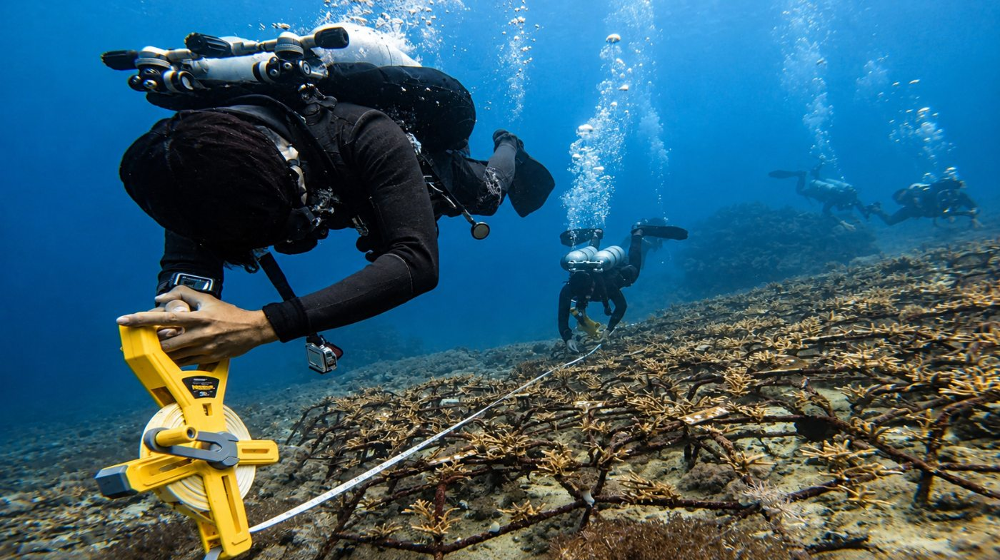
Dive every week, plant corals with your own hands and live next to our coral garden in Amed. No science degree needed.
Same team, same ocean, same Coral Home. The difference is how deep you go.
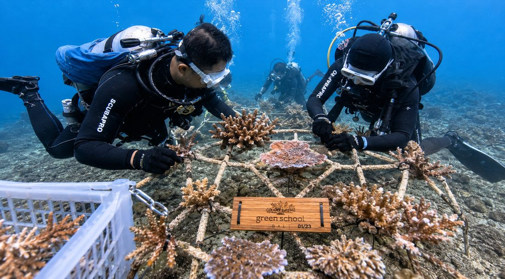
Any background, any age 18+. 1 coral restoration dive day every week, the rest of Bali is yours.
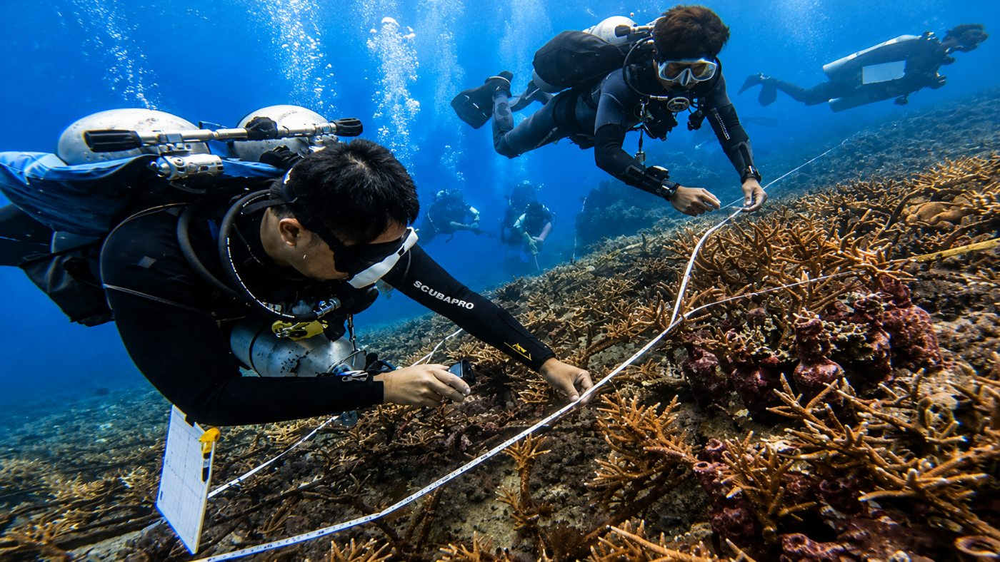
2× the dives, live experiments and real field skills for your studies and CV.
| Discovery | Research | |
|---|---|---|
| Who it’s for | Any background, 18+ | Marine biology & science students |
| Dives | 2 per week | 4 per week |
| Learning | Coral Talks every dive day | Experiments, monitoring, AI tools |
| Coral gardens | Amed + Padang Bai | Amed + Padang Bai |
| Lunch | 1 per week | 2 per week |
| Certificate | Ocean Impact Certificate | Certificate of Completion |
| Stay at Coral Home | ✓ | ✓ |
| Airport pickup | ✓ | ✓ |
Both programs are hands-on coral restoration scuba diving, so you need an Open Water certificate. No license yet? We connect you with a partner dive school for PADI or SSI Open Water in Bali before the program (~$320–350).
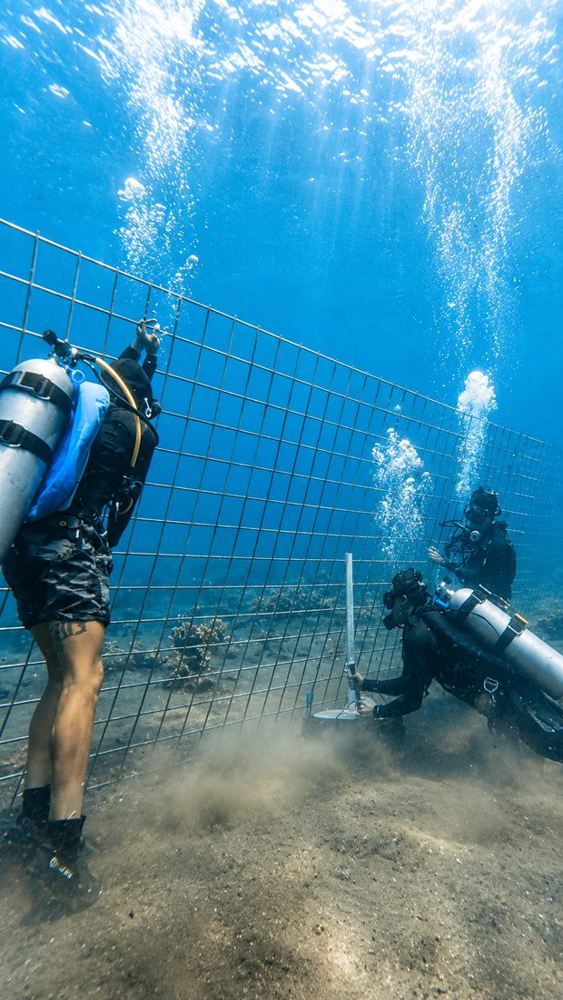
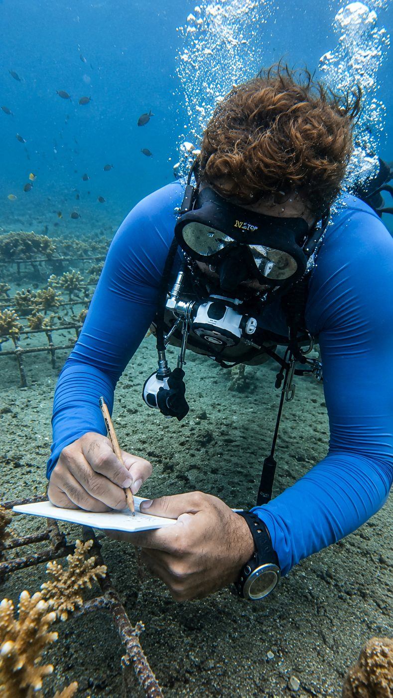
Meet the team, the reef and the structures. Join planting and reef care.
Structure maintenance, documenting changes, photo protocols.
Organize observations and learn how AI tools help with field data.
More independent dives. When ready, short briefings for guests.
“When I held the coral fragment in my hand before planting it, it looked like a beautiful little flower. If you are in Bali and love the ocean, I highly recommend this coral restoration dive near Amed.”
“Lia’s passion for the ocean and coral restoration made the whole day unforgettable. The whole team is kind, knowledgeable, and inspiring.”
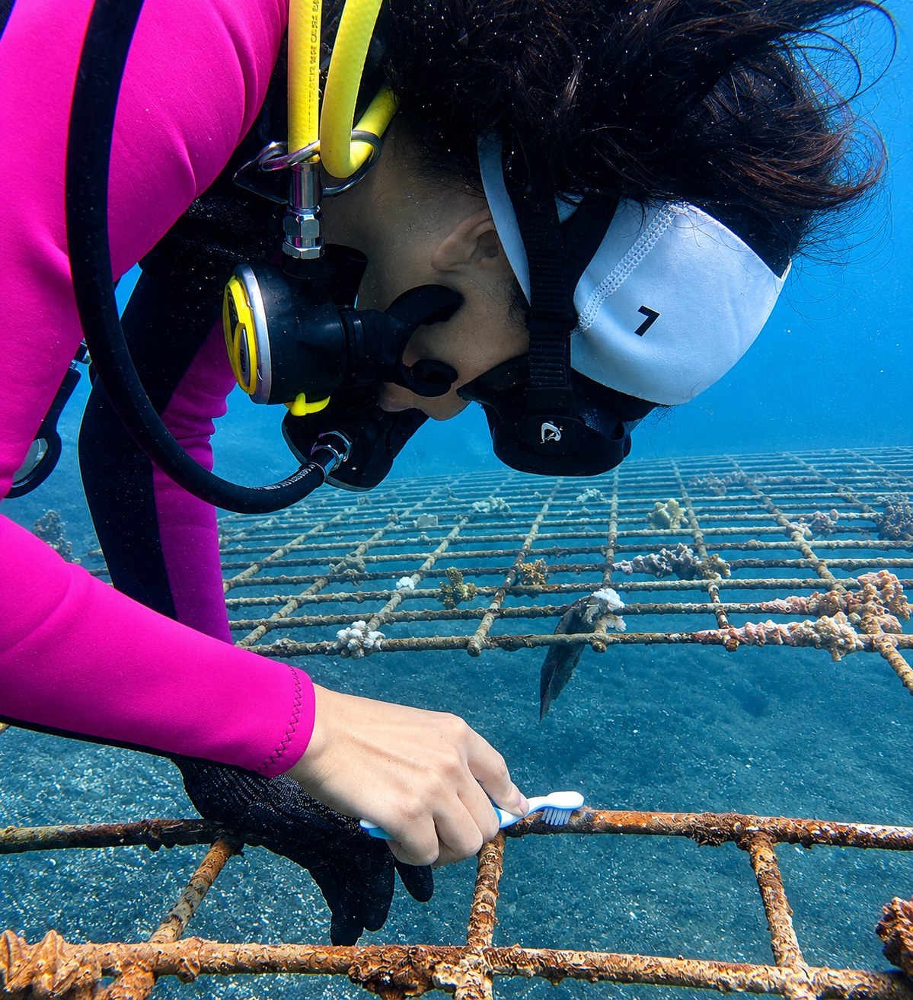
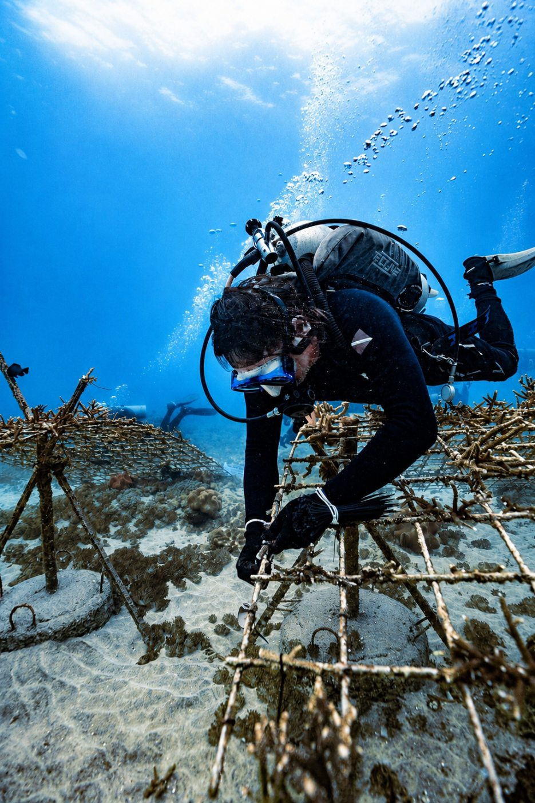
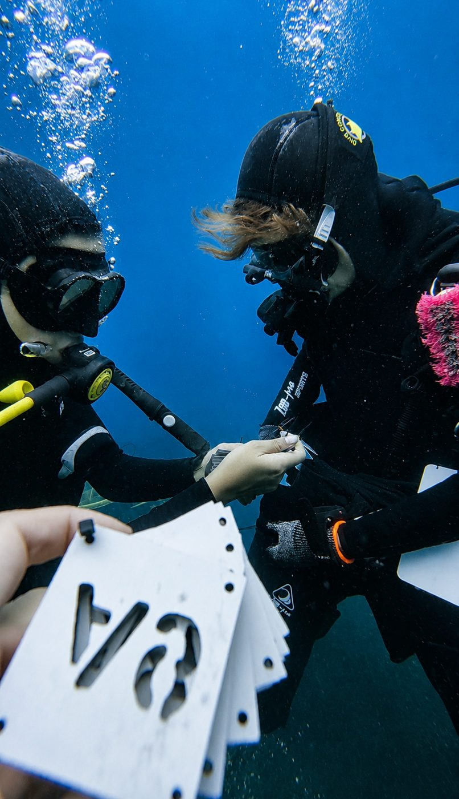
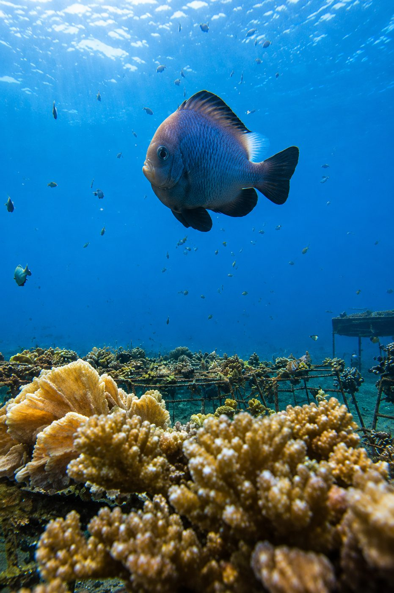
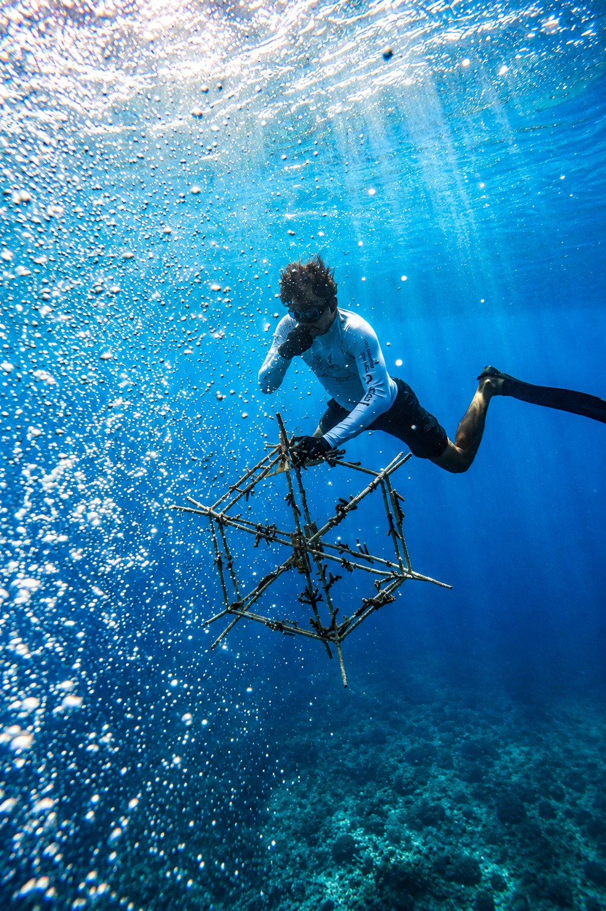
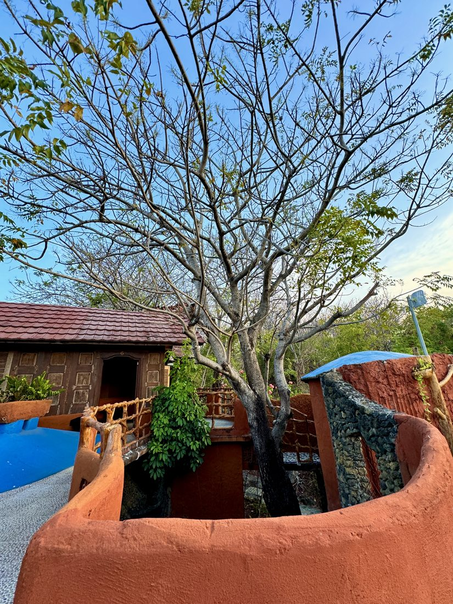
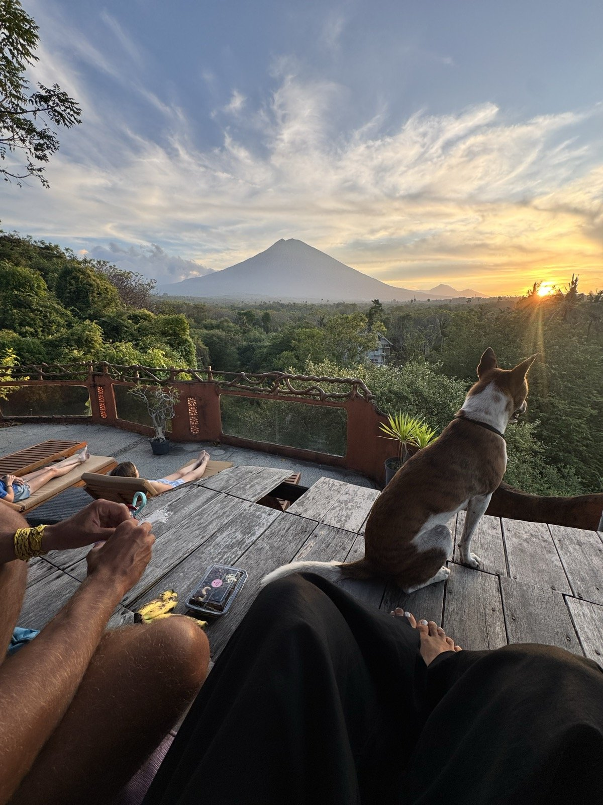
An unusual eco-home a few minutes’ walk from the ocean and our coral garden. Round walls, stone paths, volcano sunsets. Your stay is already in the price.
See Coral Home →Fill in the short form. We’ll review it and write back personally — usually within 48 hours.
Quick question? WhatsApp +62 812-4836-8288 or coralsense.bali@gmail.com
Yes. Both programs start from 1 week. A full month is better value — you'll find both prices in the program cards. Only in Bali for 1–2 days? See our Day Programs.
For Discovery: absolutely not. Any background, any profession. For Research: an academic background in marine biology, conservation, or a related field matters, as the program is built around field learning and professional development.
Yes. Open Water is needed for the in-water part, but you can complete it locally in Bali before the program or in your first days after arrival (~$320–350). For Discovery there's also a surface-participation option.
No. This is a fee-based internship — participants pay for the program and receive structured field experience, dives, accommodation, training, and support in return.
Flights, visa, travel insurance, meals outside the included dive-day lunches, scooter rental, SIM card, and personal expenses. Local warung meals ~$1–3. European-style cafés ~$4–9.
Airport transfer is included in both programs. A Coral Sense driver meets you at Denpasar and brings you to Coral Home in Amed — about 2.5 hours.
A scooter (motorbike) is the main way to get around East Bali and we strongly recommend being able to ride one. Since meals are not included in the program, you'll want the freedom to get to cafés, markets, and local spots on your own. If you don't ride a scooter, taxis are available and easy to book. We can also help arrange a car with a driver for your full stay — just write to us directly and we'll find the right solution for you.
We're happy to talk before you apply.
Write to us — we reply personally.